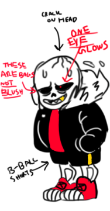

Underfell Sans
It's timid Sans in Underfell.

name | Fell Sans
gender | male
au | Underfell
maker | Underfella ( or Vic, Vix, fella )
theme | none
Official Characteristic
- dislikes puns but loves knock knock jokes
- he doesn’t get flustered hes just tired
- he wears it still because it looks cool
- that crack on his head is a mystery
- he tried on papyrus’ boots once and felt alive
Fan ( wrong ) Characteristic
- not a Masochist.